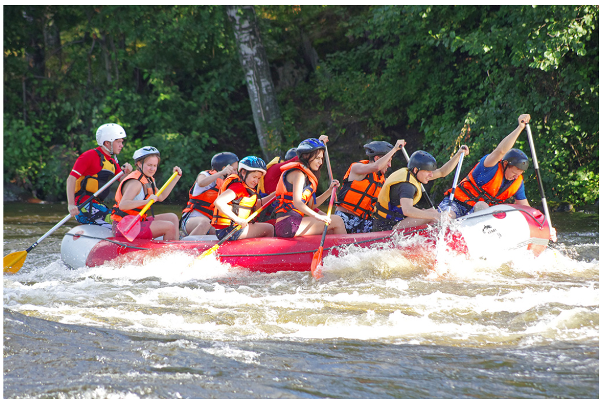
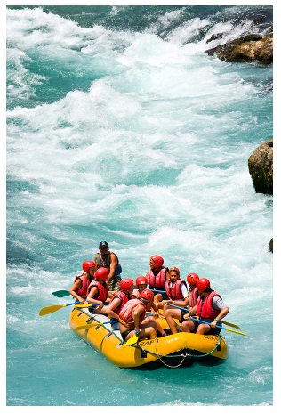

At Nairobi Water Rafting Adventures, our mission is to provide unforgettable and exhilarating experiences on the river, fostering a deep love for nature and adventure in every participant. We are dedicated to ensuring the highest standards of safety, while creating joyous and lasting memories for all our guests. Join us to discover the thrill of the rapids and the beauty of the wild!


The Nairobi Water Rafting Adventures
History
Founded in 1985 by avid rafters John and Jane Doe, White Water Rafting Adventures began as a small, family-run operation with a passion for the outdoors. What started as a dream to share the excitement of river exploration quickly grew into a beloved local business. Over the decades, we've expanded our fleet, explored countless new waterways, and guided thousands of adventurers, but our core commitment to delivering exceptional and safe rafting trips remains unchanged. We pride ourselves on our experienced guides, top-notch equipment, and a deep respect for the natural environment.
Adventure Awaits You!